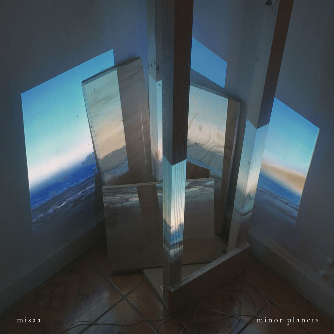

May, 2019

Produced by Matías Serrano between 2014 and 2019
Cover art by Pablo Sánchez
Design by Bárbara Molina
Debut solo album, published through Archivo Veintidós. In minor planets I explore laboratory sound creation, mixing beats, soundscapes, guitars and delays; in a personal process of several years marked by anxiety and depression.
Listen/Download/Support on Bandcamp
Listen on streaming platforms
Listen on Youtube